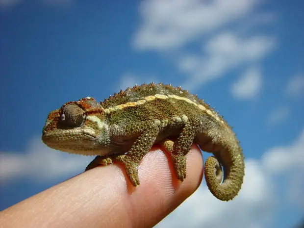

No one grows up wanting to be an abortion worker, I’ve heard it said. And just as true, perhaps, is that no one grows up aspiring to someday dedicate a portion of their life to protesting something like abortion.
Twenty-five years ago, I’d have shaken my head vigorously at the idea that my future would include me standing near an abortion facility on a regular basis, praying, being a witness to life, and yes, I guess, protesting, not the clients themselves but the very idea of abortion as a civil solution to an unplanned pregnancy.
Thirty years ago, I’d have been even more insistently against such a possibility. During my formative years, I was so afraid of offending anyone I couldn’t even really name a favorite band, not to mention a political leaning. A chameleon through and through when it came to choosing a stance, I blended in on controversial topics to keep the peace.

Though I hadn’t been shielded from the world’s ills by any means, I was still relatively unformed, and lacking in wisdom. And despite my love of language and song, I had no real voice to speak of.
So how did this happen? How did I leap over the chasm? What compelled me to do what I did this past Wednesday on the sidewalk in front of North Dakota’s only abortion facility, forgoing the safe confines of a opinion-less life to one in which I regularly put myself in a position to be mocked, scorned, reviled, spit at, cursed at and misunderstood?
Let’s return to those college days 25 years or so ago. I am in my third year and living with four other girls, and we are all feeling pretty confident in our discoveries and knowledge. We love engaging in meaningful discussion and spend hours mulling over issues of the day. On this particular afternoon in my memory, the topic is abortion.
One of them says, quite passionately, “I would never have an abortion, but neither would I deny someone else that choice.” I nod eagerly. In my newly enlightened state, I see the world’s wisdom so clearly. Having an opinion while still supporting contrary opinions seems the fairest, most reasonable position to take.
A half-formed thought, as it would turn out, and one that traveled with me into the next year, until finally, as a senior on retreat with my faith group, I became pulled into, again, a discussion on abortion. Sitting in a circle of the sunken living room of our mentor, my thoughtful, mercy-minded peers began going deep, but their conclusion varied from that of my other friends. While they also saw the conundrum, they couldn’t shake that abortion ends one life and damages another. The “I wouldn’t do it but others can” attitude did nothing for the the babies being torn limb from limb, nor the mothers being denied true support to bring that life to bear. Furthermore, they’d be left to suffer that “choice” the rest of their lives.
As my peers became my witnesses to truth, I found myself not just nodding in agreement, but my soul springing to life. My earlier stance had been short-sighted, only a compromise to keep my chameleon on and guarantee acceptance by the world. It was only feigned mercy, not the real deal.
A few years later, I became a mother, and after our second child came into the world, we’d face the death of our third child in miscarriage. These moments combined to set me more assuredly on the path of fighting for the sanctity of human life. But what really clinched the deal was meeting women damaged by abortion. If the fence-sitter in me still existed in any form at that point, she was swiftly knocked off her comfy perch upon hearing the truth of the profound loss and regret experienced through the “choice” of abortion. My days of saying, “I could never do that, but…” had effectively come to a crashing halt as my heart broke over their broken hearts.
This same broken heart drives me downtown each Wednesday that I’m able to go, along with my faith in the God of life. When he asks someday what I did for the least of these, I will have this to offer among my acts of mercy; the hours in which I tried to bring love and illumination to the sidewalk.
Though we cannot simplify the reality of abortion and all the connected issues and ills, there is a simplicity about it for those awakened. Simply, it is wrong. Forced death can never lead to a long-term good.
And now, standing in the aftermath of others’ pain, I have found the courage to go from a gutless, nodding teen to a mother who regularly puts her reputation and life on the line.
In some ways, life was easier when my guts were tucked neatly away somewhere in a corner of my soul. But my conscience became atrophied and my humanity, numbed. No more. While at least some of my friends from those college days have retained their earlier stance and see mine as divergent and unfair, I’m willing to bear that cross of dissonance and misunderstanding for the sake of the greater thing. Freedom can be found in no longer forming our opinions based on how many friends we’ll retain as a result.
I didn’t set out to do so, but in the process of living this thing called life, I got my guts. And I’m glad.
Q4U: When did you find courage you didn’t think was possible to do something hard, something that could cost you friends and the admiration of the world?